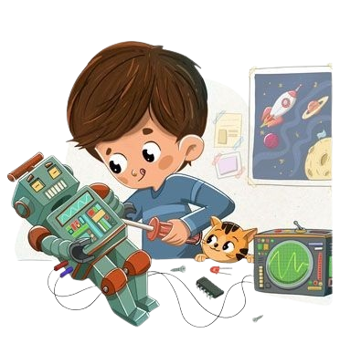

Nuestro Objetivo
Objetivo General
Crear una plataforma web educativa enfocada en la enseñanza de la robótica, dirigida a los estudiantes de 5to año de Educación General Básica de la Unidad Educativa Fiscomisional “Tirso de Molina”, con el fin de ofrecer una experiencia de aprendizaje dinámica, comprensible y accesible, que sirva de apoyo tanto para docentes como para estudiantes.
- Elaborar materiales didácticos, incluyendo evaluaciones y videos explicativos, que introduzcan los principios básicos de la robótica de forma clara y atractiva.
- Incorporar elementos visuales como animaciones, diagramas e imágenes para complementar la información y facilitar la comprensión del contenido.
- Diseñar una interfaz interactiva y de fácil uso, adaptada al nivel educativo de los estudiantes de 5to año de EGB.
- Desarrollar un sistema de ejercicios interactivos y autoevaluaciones que permita a los estudiantes medir sus avances y recibir retroalimentación automática.
